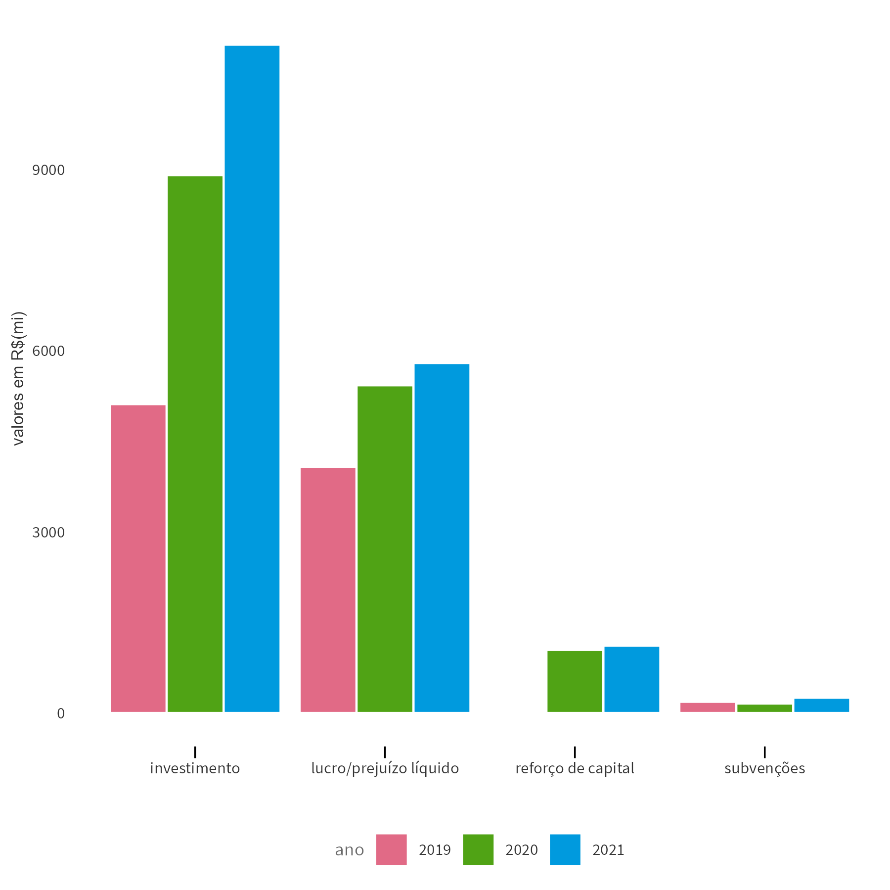
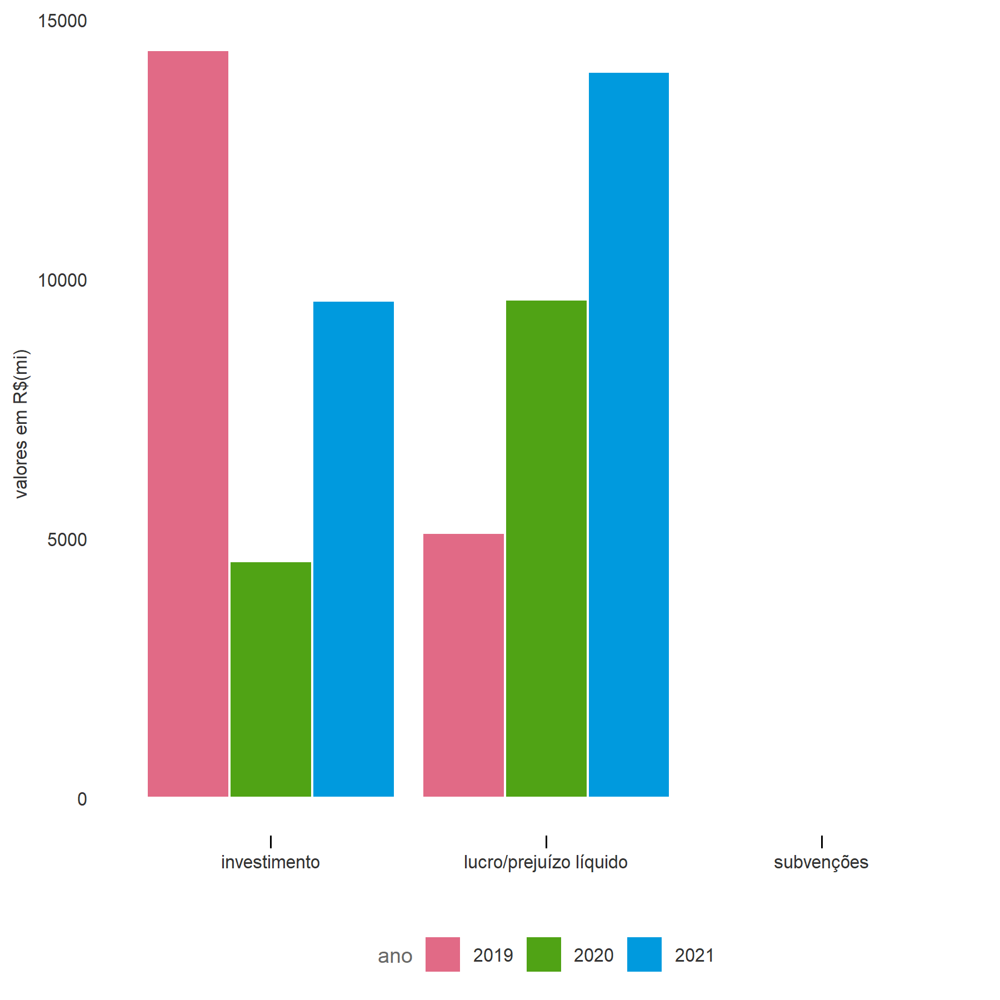
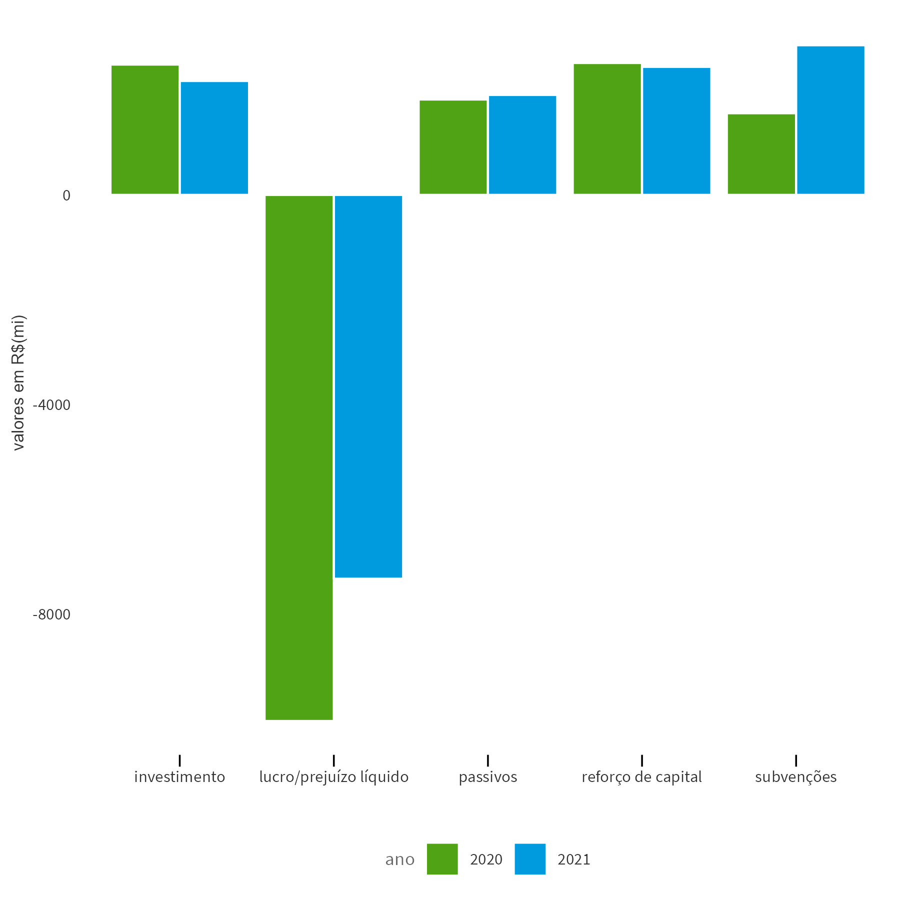
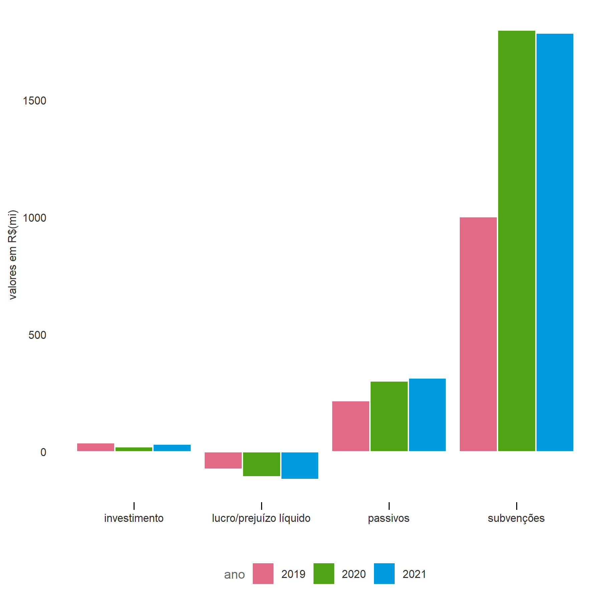

Fruto de intenso esforço da Secretaria do Tesouro Nacional, com o apoio dos Estados, essa iniciativa consolida os dados das empresas estatais estaduais pelo quarto ano, e reforça o compromisso de todos os envolvidos com a transparência.
Espera-se que essas informações permitam que os cidadãos sejam capazes de avaliar as vantagens de um Estado empreendedor, cobrar resultados e fiscalizar as ações dos governos e de suas estatais, entendendo que o objetivo das estatais é a prestação de serviços de relevante interesse coletivo à população.
A novidade deste ano é uma seção que irá analisar alguns setores específicos: saneamento e energia, como os setores mais lucrativos, e pesquisa e assistência técnica e transporte, como os de maiores prejuízos. As informações encontram-se divididas em cinco partes:
- Com quantas estatais se faz um Estado — apresenta o quantitativo de estatais por Região/Estado, informa o total de empresas dependentes e não dependentes e seus respectivos segmentos;
- O Estado empreendedor — mostra o lucro/prejuízo dessas empresas, além de apresentar um ranking de suas respectivas rentabilidades;
- O Estado administrador — relaciona a governança, caracterizada pela presença de conselhos/comitês, com os resultados das estatais;
- O Estado acionista — apresenta o resultado do impacto financeiro líquido das empresas controladas nas finanças públicas estaduais;
- Indícios de dependência — aborda situações de estatais, classificadas pelos Estados como não dependentes, que apresentaram indícios de dependência.
Os dados aqui disponibilizados foram declarados pelos Estados, sendo, portanto, de inteira responsabilidade deles a precisão ou correção das informações consolidadas.
Na ficha abaixo você encontra informações detalhadas das estatais. Para isso, basta selecionar o estado desejado e depois clicar nos círculos. Cada círculo representa uma estatal e traz as seguintes informações: dependência, situação, capital social, investimento realizado, lucro, e link para a carta anual da empresa, nos casos em que ela foi disponibilizada.
Ficha básica das empresas por setor
- Dependentes
- Não Dependentes
- Não Dependentes, com indícios de dependência
Clique sobre uma empresa para exibir mais detalhes.
Empresa
Empresa não dependente, mas com indícios de dependência por ter recebido subvenções do ente controladorreforço de capital do ente controlador, sem que o Capital Social declarado pela empresa tenha se alterado em relação ao exercício anterior.
Situação:
Capital Social:
Investimento realizado:
Lucros:
Com quantas estatais se faz um estado?
Conforme os dados informados no SICONFI, existem 302 empresas controladas pelos Estados, sendo que 260 estão em situação ativa e 42 em fase de liquidação. Ressaltamos que esses números foram alcançados devido a um esforço do Tesouro Nacional para aprimorar cada vez mais as informações aqui disponibilizadas, que cruzou diferentes bases de dados e solicitou aos Estados a inclusão das empresas eventualmente identificadas nas outras bases. Dessa forma, os dados repassados pelos Estados vêm sendo mais fidedignos a cada ano. Em relação à publicação do ano passado, foram incluídas quatro empresas do Estado do Amapá, que não havia enviado os dados no último ano, e três empresas do Estado do Amazonas, do Ceará e do Rio Grande do Sul, criadas recentemente, e excluídas sete empresas do Ceará, Paraná, Rio Grande do Sul, Santa Catarina e São Paulo, devido à conclusão dos processos de liquidação, privatização ou incorporação a outras entidades.
A quantidade de estatais que cada estado possui varia bastante, o Distrito Federal possui 26 empresas, seguido de Rio de Janeiro com 22 e Santa Catarina, Minas Gerais e Goiás com 17 cada um. Já os estados com a menor quantidade de estatais são Tocantins com três empresas, Amapá com quatro, e Maranhão e Roraima com cinco cada um.
O mapa abaixo mostra como ficaria cada estado brasileiro caso sua área fosse aumentada ou reduzida na proporção das empresas estatais que possui.
Já o gráfico abaixo mostra a quantidade de estatais por Estado, separadas entre dependentes e não dependentes. Em termos relativos, 44% das empresas declaradas pelos Estados são dependentes, ou seja, 133 empresas do total de 302. O número de estatais por Estado varia de 3 a 26, sendo que o Acre possui apenas empresas dependentes, e outros apenas não dependentes (Rio Grande do Sul, Rondônia e Tocantins).
Em termos de dependência, Rio de Janeiro apresenta o maior número de empresas dependentes (15), seguido pelo Acre (12). Ao focalizar em empresas não dependentes, Distrito Federal lidera o ranking, com 18 empresas, seguido por Minas Gerais, com 14.
Quantidade de empresas por Estado
- Dependentes
- Não Dependentes
Ao examinar as empresas controladas de acordo com os segmentos empresariais, observa-se que os setores Financeiro, Saneamento e Habitação e Urbanização são os mais representativos, com 35, 29 e 23 empresas, respectivamente. Entre os segmentos com menor número de empresas, destacam-se os setores de Saúde com 7, Mineração e Turismo com 8 empresas cada.
Abaixo é possível selecionar um setor para exibir sua definição, bem como um mapa indicando os estados que possuem empresas nessa área de atuação.
Em relação ao critério dependência, o setor de Pesquisa e Assistência Técnica Agropecuária possui o maior número de empresas dependentes (19), seguido pelo setor de Habitação e Urbanização (17) e de Transporte (15). Por outro lado, o setor Financeiro caracteriza-se pelo maior quantitativo de empresas não dependentes (32), seguido pelo de Saneamento (24) e Gás e Derivados (19).
Quantidade de empresas por setor
- Dependentes
- Não Dependentes
O estado empreendedor
A atuação do Estado por meio de empresas estatais tem previsão na Constituição Federal. Entretanto, ela prevê essa atuação do Poder Público como uma exceção. Além disso, a fim de garantir o alcance do “relevante interesse coletivo”, a eficiência, a eficácia e a efetividade devem estar presentes na atuação das estatais.
Nesse sentido, é importante quantificar os lucros/prejuízos das empresas controladas pelos Estados, além de avaliar o patamar de rentabilidade delas. O gráfico abaixo demonstra a distribuição dos lucros ou prejuízos, categorizado por dependentes e não dependentes.
Ao longo de 2021, os números revelam que 37% das estatais registraram prejuízo, enquanto em 2020, esse número chegou a alcançar 44% delas.( veja os dados de 2020)
Ao se analisar especificamente as empresas não dependentes, tem-se que 28% delas tiveram perdas financeiras. Esse valor passa para 49% se considerarmos apenas as estatais dependentes.
Distribuição das empresas em relação ao lucro ou prejuízo
- Empresas com Prejuízo
- Empresas com Lucro
Em termos de segmento empresarial, o setor que apresentou o maior lucro para o período foi o de Energia, com um ganho total de R$ 14,0 bilhões. Logo em seguida, tem-se o segmento de Saneamento, com um resultado de R$ 5,8 bilhões, e, na sequência, o setor de Desenvolvimento Regional, com lucro de R$ 4,1 bilhões. Por outro lado, o setor de Transporte possui o pior resultado para o período, com prejuízos de R$ 7,5 bilhões. Cabe destacar que esse setor é deficitário especialmente por causa das companhias de metrô. Em seguida, o segmento de Habitação e Urbanização apresentou cerca de R$ 384 milhões em perdas.
Lucros e Prejuízos totais por setor de atuação
- Prejuízo
- Lucro
Uma relação importante de se avaliar é o resultado da empresa (lucro/prejuízo) em relação ao tamanho do seu patrimônio. No diagrama abaixo, plota-se no eixo y (ordenada) o patrimônio líquido das empresas e no eixo x (abscissa) os lucros/prejuízos correspondentes. De forma simplificada, observa-se uma relação positiva entre a magnitude (positivo/negativo) do resultado apresentado e o correspondente patrimônio líquido. Esse resultado já era de certa forma esperado pelo fato de os valores nominais para lucro/prejuízo divulgados estarem associados com o tamanho da empresa – representado aqui pelo seu patrimônio líquido.
Relação entre Lucro / Prejuízo e o Patrimônio Líquido das empresas
Passe o mouse sobre os pontos para obter detalhes sobre a empresa. É possível selecionar uma área para zoom (clicando-se duas vezes sobre o gráfico retorna-se à visão principal).
Dessa forma, uma maneira complementar de se comparar os retornos dos diferentes setores analisados é por meio de um indicador de rentabilidade que pondere a magnitude do resultado da companhia pelo seu tamanho. Assim, foi elaborado um indicador que representa uma estimativa da rentabilidade das empresas controladas pelos Estados, calculado pela razão entre o lucro/prejuízo e o patrimônio líquido. O gráfico abaixo apresenta os principais resultados.
Estimativa de rentabilidade das empresas
Rentabilidade definida como a razão entre lucro ou prejuízo e patrimônio líquido. As empresas são representadas por pontos, da seguinte forma:
● rentabilidade positiva ● rentabilidade negativa
Estão excluídas 63 empresas sem informação de lucro / prejuízo ou patrimônio líquido, ou que apresentaram patrimônio líquido menor ou igual a zero. Para uma melhor visualização, não estão apresentadas 10 empresas para as quais o valor do indicador de rentabilidade ficou abaixo de -200%, e 2 empresas para quais o indicador de rentabilidade foi superior a +200%.
![Gráfico que mostra cada empresa como um ponto. Os pontos/empresas estãos dispostos verticalmente conforme a rentabilidade obtida em 2021, a partir do valor zero (quanto maior a rentabilidade, mais para o alto o ponto correspondente está; quanto menor, mais para baixo). Horizontalmente, os pontos que correspondem a empresas dependentes estão à esquerda, e os das empresas não dependentes estão à direita. As anotações do gráfico correspondem às informações que serão mencionadas no parágrafo seguinte ao gráfico.](./plots/roe2.png)
Observa-se que a quantidade relativa de estatais dependentes com rentabilidade negativa (42%) é maior do que a das estatais não dependentes (28%). Entretanto, diversos fatores podem estar associados a esse resultado. O fato de as estatais dependentes apresentarem piores resultados pode ser decorrente de má gestão, indicando que, de modo geral, a gestão das estatais não dependentes é melhor. No entanto, uma outra explicação para esse resultado pode estar associada ao fato de que que alguns setores de serviços essenciais são predominantemente dependentes e possuem a finalidade associada ao atendimento de políticas públicas e não de lucro.
Ao se explorar os números das rentabilidades pelo critério de dependência e por segmentos empresariais, verifica-se que as empresas dependentes do setor de Saúde possuem a maior média de rentabilidade para o ano de 2021, com uma cifra de 38%, seguidas pelas empresas dependentes da área de Informática e Tecnologia da Informação, com 18%. Destacam-se as empresas não dependentes de Desenvolvimento Regional, Outros Setores e Gás e Derivados, com rentabilidades médias de 51%, 35% e 29%, respectivamente. Com rentabilidades médias negativas, destacam-se as empresas dependentes de Gestão de Ativos (-33%), Gás e Derivados (-24%) e de Abastecimento de Alimentos e Outros Insumos (-15%). Entre as empresas não dependentes, apresentaram rentabilidade negativa os setores de Saúde (-13%), de Transporte (-3%) e de Habitação e Urbanização (-2%).
Estimativa de rentabilidade média das empresas por setor
Rentabilidade definida como a razão entre lucro ou prejuízo e patrimônio líquido. Estão excluídas 63 empresas sem informação de lucro / prejuízo ou patrimônio líquido, ou que apresentaram patrimônio líquido menor ou igual a zero. O tamanho dos pontos sugere a quantidade de empresas que foram consideradas no cálculo da média indicada.
- Média Dependentes
- Média Não Dependentes
![É um gráfico que busca ilustrar a rentabilidade agregada das empresas de cada setor, separando-se as empresas dependentes das não dependentes. Para cada setor, há um círculo que representa a rentabilidade média das empresas dependentes que atuam nesse setor, e outro círculo para a rentabilidade média das empresas não dependentes. Os círculos estão posicionados horizontalmente de forma que quanto maior a rentabilidade média, mais à direita o círculo está. Uma linha liga os dois círculos para ilustrar a diferença entre essas duas médias. Para a maioria dos setores, o círculo que corresponde à média de suas empresas não dependentes está à direita do círculo que representa a média das empresas dependentes, ou seja, para a maioria dos setores a rentabilidade média das não dependentes é superior às dependentes.](./plots/roe_dotplot.png)
A maioria das empresas que pagou PLR (Participação nos Lucros e Resultados) ou RVA (Remuneração Variável Anual) é não dependente (na tabela "Pagamento de Participação no Lucros", abaixo, pode-se identificar os casos das estatais dependentes que efetuaram esse pagamento). Considerando-se as empresas não dependentes, os principais setores que pagaram algum tipo de participação nos resultados foram Financeiro (18 empresas), Saneamento (12 empresas), e Gás e Derivados (10 empresas).
Pagamento de Participação nos Lucros
Cada quadrado representa uma empresa, os números indicam o percentual de empresas do setor que pagaram PLR, para as dependentes e para as não dependentes. Estão excluídas nove empresas para as quais não foram fornecidas as informações necessárias.
- Empresa que pagou PLR
- Empresa que não pagou PLR
O pagamento de PLR ou RVA para estatais federais é regulamentado pela CCE 10/1995, que não permite a distribuição de lucros caso a empresa tenha recebido recursos do Tesouro Nacional, seja para pagamento de despesas correntes ou de capital, o que já impede a distribuição de lucros por estatais dependentes. O regulamento também não permite distribuição de lucros por estatais que tenham registrado prejuízos em exercícios anteriores ainda não amortizados por exercícios posteriores. No entanto, essas regras não são válidas para as estatais estaduais, que seguem regras específicas conforme o Estado. Para maiores informações, ver Acórdão TCU 937/2019.
A título comparativo, destacamos duas empresas que não se enquadrariam nas regras da União para o pagamento de PLR ou RVA. É importante ressaltar que nada impede que o Estado possua legislação específica que autorize tal pagamento.
Pagamento de Participação nos Lucros
Valores em R$ mil
| UF | Estatal | Setor | Dependência | Lucro / Prejuízo Líquido 2021 | Lucro / Prejuízo Líquido 2020 |
|---|---|---|---|---|---|
| DF | BRB Serviços | OUTROS | Dependente | 6.128 | 3.195 |
| SP | COMPANHIA PAULISTA DE TRENS METROPOLITANOS - CPTM | TRANSPORTE | Dependente | -469.383.5 | -963.982.6 |
A BRB Serviços é uma empresa dependente, e apresentou lucros em 2020 e 2021. Em 2021, o Distrito Federal informou que estava elaborando legislação específica que abrangeria regras para o pagamento de PLR e de RVA. No entanto, posteriormente informou que não houve alteração legal nesse sentido.
A empresa CPTM do Estado de São Paulo apresentou prejuízos nos exercícios de 2020 e 2021, sendo dependente. Vale ressaltar que o Decreto 59.598/2013, do Estado de São Paulo, prevê o pagamento de PLR mesmo para empresas dependentes ou que apresentem prejuízo no exercício, desde que atendam alguns critérios como redução do grau de dependência e redução do prejuízo.
Setores mais lucrativos e de maiores prejuízos
Uma das formas de o governo conduzir as atividades econômicas, com o objetivo de atender ao relevante interesse público, ocorre por meio da administração das empresas estatais. Nesses casos, nem sempre o mais importante é o resultado dessas estatais em termos de lucro, mas sim o atingimento de determinados objetivos definidos pelo governo
Esse caso está bastante associado ao exercício da função alocativa, quando o governo fornece bens e serviços que não são ofertados adequadamente pelo mercado. Isso acontece com setores como o de energia e saneamento, que são estratégicos para a população e considerados monopólios naturais. Outro exemplo é quanto o governo exerce a função estabilizadora, através do controle de preços de serviços, como por exemplo as tarifas de transporte. Ou até mesmo a função distributiva, por meio das estatais que fornecem serviços de pesquisa e assistência técnica para pequenos produtores rurais. Dessa forma, selecionamos quatro setores para detalhar os dados com um pouco mais de profundidade. Foram eles: saneamento e energia, que desde 2019 figuram entre os setores que mais apresentam lucros; e transporte, e pesquisa e assistência técnica agropecuária, que desde 2019 aparecem dentre os setores que mais apresentam prejuízo. Ressaltamos que as estatais que compõem os setores entre os anos de 2019 e 2021 sofreram mudanças, seja porque algumas foram privatizadas ou liquidadas, seja porque não constavam em nossas bases de dados iniciais. A análise abaixo leva em consideração o agrupamento de estatais do setor.
Saneamento
O setor de saneamento está em grande destaque desde a publicação do novo marco legal do saneamento básico, criado pela Lei n° 14.026/2020, que prevê que até o ano de 2033 99% da população brasileira tenha acesso ao abastecimento de água, e que 90% tenha acesso à coleta e ao tratamento de esgoto. Para o atingimento desse objetivo, estima-se que será necessário a realização de investimentos de cerca de R$ 900 bilhões.
A análise do agrupamento de estatais que compõem o setor mostra que os investimentos têm aumentado desde 2019, saindo de R$ 5,1 bilhões para R$ 11,1 bilhões em 2021. O setor de saneamento é composto majoritariamente por estatais não dependentes (mais de 80%), sendo que das cinco estatais declaradas dependentes, uma delas encontra-se em processo de liquidação. Essas estatais receberam, em média, por ano, R$ 1,1 bilhão em aporte de capital dos governos estaduais durante os três anos analisados. Houve também o recebimento de subvenções de, em média, R$ 200 milhões por ano e assunção de passivos pelo ente controlador de, em média, R$ 69 milhões por ano. O lucro médio do setor no período foi de R$ 5,1 bilhões, com uma leve tendência de alta.
Evolução de saneamento analítico
Evolução de indicadores selecionados desdobrado por empresas.
- Dependentes
- Não Dependentes
Evolução de saneamento sintético
Evolução de indicadores selecionados agregados.
Energia
O setor de energia apresentou aumento de seus lucros durante todo o período analisado, saindo de R$ 5,1 bilhões em 2019 para R$ 14,0 bilhões em 2021. Apenas duas estatais do setor apresentaram prejuízo em 2021 (CEB Iluminação Pública e Serviços e Companhia Energética de Roraima). No entanto, os investimentos não acompanharam o aumento dos lucros, sofrendo uma forte queda em 2020 (de R$ 14,4 bilhões para R$ 4,6 bilhões) e voltando a aumentar em 2021 para R$ 9,6 bilhões. Nenhuma estatal desse setor declarou ter recebido aportes de capital durante esses três anos.
Apenas o estado de Roraima possui uma estatal do setor energético declarada como dependente, a Companhia Energética de Roraima, no entanto ela encontra-se hoje em processo de liquidação, o que mostra que o setor é caracterizado por estatais não dependentes, ou seja, que conseguem se manter sem recursos do ente controlador.
Evolução de energia analítico
Evolução de indicadores selecionados desdobrado por empresas.
- Dependentes
- Não Dependentes
Evolução de energia sintético
Evolução de indicadores selecionados agregados.
Transporte
O setor de transporte será analisado considerando apenas os anos de 2020 e 2021, isso porque alguns estados não repassaram informações de todas as estatais em 2019. Durante os dois últimos anos esse setor esteve entre os dois setores de maior prejuízo.
As estatais que compõem esse setor prestam serviços de transporte urbano de ônibus, metrô e trens e possuem como característica serem em sua maior parte classificadas como dependentes (68% das estatais).
O prejuízo do setor foi de R$ 10,0 bilhões em 2020, alcançando e R$ 7,5 bilhões em 2021. Em 2020, os investimentos no setor foram de R$ 2,5 bilhões em 2020 sofrendo uma pequena redução em 2021 para R$ 2,2 bilhões. Os aportes de capital foram de R$ 2,5 bilhões em 2020, já em 2021 houve pequena redução para R$ 2,4 bilhões. As subvenções aumentaram de R$ 1,6 bilhões em 2020 para R$ 2,9 bilhões em 2021. Os entes controladores assumiram, ainda, uma média de R$ 1,9 bilhão de passivos ao ano no período.
Evolução de transporte analítico
Evolução de indicadores selecionados desdobrado por empresas.
- Dependentes
- Não Dependentes

Evolução de transporte sintético
Evolução de indicadores selecionados agregados.
Pesquisa e Assistência Técnica Agropecuária
O setor de pesquisa e assistência técnica agropecuária é composto integralmente por estatais declaradas dependentes, sendo que das 19 estatais desse setor, quatro estão em processo de liquidação.
Nem todos estados possuem estatais desse setor, elas aparecem apenas nos seguintes estados: AC, CE, DF, GO, MT, MS, PA, PE, RN, SE, que possuem uma estatal cada; e MG, PB, RJ e SC, possuem duas estatais cada um.
Esse setor não recebeu aportes de capital em nenhum dos anos por nenhuma das estatais. As subvenções recebidas passaram de R$ 1,0 bilhão em 2019 para R$ 1,8 bilhão tanto em 2020, quanto em 2021. Já em relação aos demais dados avaliados, não há grandes alterações entre os exercícios. Em média, o setor investiu R$ 30 milhões por ano, teve um prejuízo anual de R$ 100 milhões e R$ 278 milhões de passivos assumidos ao ano.
Evolução de pesquisa e assistência técnica analítico
Evolução de indicadores selecionados desdobrado por empresas.
- Dependentes
- Não Dependentes
Evolução de pesquisa e assistência técnica sintético
Evolução de indicadores selecionados agregados.
O estado administrador
Estruturas de governança têm como objetivo principal coordenar a empresa para atingir seus objetivos, e podem ser formadas por diferentes comitês ou conselhos que atuam focados em áreas específicas (por exemplo, fiscal, administração e auditoria) visando auxiliar a empresa em seus resultados.
Apesar de a presença de qualquer comitê ou conselho dentre os citados acima já indicar que a empresa possui algum nível de governança, a análise a seguir irá considerar que há uma estrutura de governança completa apenas no caso de estatais que possuem concomitantemente três órgãos: Conselho Fiscal, Conselho de Administração e Comitê de Auditoria. Essa decisão foi tomada porque diferentes legislações obrigam as estatais a possuírem tais colegiados, de acordo com suas características. Assim, praticamente todas as estatais possuem ao menos um deles.
Legislações específicas estabelecem a necessidade de tais conselhos/comitês nas estatais, de acordo com suas características. A Lei 6.404/1976, que dispõe sobre as Sociedades por Ações, prevê a obrigatoriedade de Conselho Fiscal para toda S.A e de Conselho de Administração para toda S.A de capital aberto. A Lei 13.303/2016, por sua vez, prevê a constituição de Conselhos Fiscais, Comitê de Auditoria e Conselho de Administração.
Considerando-se as estatais não dependentes, 57% delas apresentam as três estruturas de governança, ou seja, possuem conselhos de administração, fiscal e de auditoria. Os melhores setores, com os três níveis de governança foram Saúde (100%), Saneamento (79%), Energia (76%) e Informática e Tecnologia da Informação (67%).
Já no caso das estatais dependentes, o melhor setor é o de Energia (100%), seguido pelo de Portos e Hidrovias (67%). Entretanto, apenas 12% das estatais dependentes possui as três estruturas de governança, sendo que em boa parte dos setores não há nenhuma empresa que atende a esse critério.
Presença de estrutura de governança por setor
Percentuais das empresas que possuem estruturas de governança completas (Conselho de Administração, Conselho Fiscal e Comitê de Auditoria) por setor e por tipo de dependência.
- Dependentes
- Não Dependentes
O gráfico abaixo mostra que as empresas mais lucrativas possuem as três estruturas de governança. 83% das empresas que possuem estrutura de governança completa apresentaram rentabilidade positiva, enquanto entre as que não possuem esse percentual é de 55%.
Estimativa de rentabilidade das empresas pelo critério de Governança
Rentabilidade definida como a razão entre lucro ou prejuízo e patrimônio líquido. As empresas são representadas por pontos, da seguinte forma:
● rentabilidade positiva ● rentabilidade negativa
Estão excluídas 63 empresas sem informação de lucro / prejuízo ou patrimônio líquido, ou que apresentaram patrimônio líquido menor ou igual a zero. Para uma melhor visualização, não estão apresentadas 10 empresas para as quais o valor do indicador de rentabilidade ficou abaixo de -200%, e 2 empresas para quais o indicador de rentabilidade foi superior a +200%.
![Gráfico que mostra cada empresa como um ponto. Os pontos/empresas estãos dispostos verticalmente conforme a rentabilidade obtida em 2021, a partir do valor zero (quanto maior a rentabilidade, mais para o alto o ponto correspondente está; quanto menor, mais para baixo). Horizontalmente, os pontos que correspondem a empresas que não possuem estrutura de governaça completa estão à esquerda, e os das empresas que possuem estrutura completa estão à direita. As anotações do gráfico correspondem às informações que foram mencionadas no parágrafo anterior ao gráfico: 83% das empresas que possuem estrutura de governança completa apresentaram rentabilidade positiva, enquanto entre as que não possuem esse percentual é de 55%.](./plots/roe_gov.png)
A Lei 13.303/2016, em seu artigo 8°, prevê também a necessidade da publicação de cartas anuais de políticas públicas e governança coorporativa pelas estatais:
Elaboração de carta anual, subscrita pelos membros do Conselho de Administração, com a explicitação dos compromissos de consecução de objetivos de políticas públicas pela empresa pública, pela sociedade de economia mista e por suas subsidiárias, em atendimento ao interesse coletivo ou ao imperativo de segurança nacional que justificou a autorização para suas respectivas criações, com definição clara dos recursos a serem empregados para esse fim, bem como dos impactos econômico-financeiros da consecução desses objetivos, mensuráveis por meio de indicadores objetivos;
A Lei estabelece também que a carta anual deve ter ampla publicidade, e estar em linguagem clara e direta. Notem que ao exigir essa publicação, a Lei objetiva permitir que a sociedade possa acompanhar as ações das estatais, avaliar seu atendimento ao interesse coletivo e ao cumprimento das polítivas públicas. Assim, a sociedade é capaz de agir como um agente adicional à estrutura de governança da estatal.
Das 302 estatais estaduais, apenas 133, ou seja 44%, encaminharam link para as cartas anuais. O link pode ser encontrado na ficha básica das empresas, caso a empresa tenha fornecido essa informação.
O estado acionista
Quais os resultados das empresas para o Estado Acionista?
Há uma relação financeira entres os Estados e suas estatais que se dá, sobretudo, por meio de:
▲ Dividendos — recursos, decorrentes de uma parte do lucro apurado, que as estatais transferem para o Estado.
▼ Subvenções e Aumento de Capital — recursos que os Estados transferem para as empresas.
Quando os Estados recebem mais recursos por meio de dividendos do que transferem por meio de subvenções ou aumento de capital, pode-se dizer que as estatais contribuem para o resultado fiscal do Estado. No entanto, quando as saídas de recursos dos Estados são maiores que as entradas, podemos dizer que tais empresas oneram o resultado fiscal do Estado.
De forma geral, ao longo de 2021, os Estados transferiram R$ 7,5 bilhões como reforço de capital e R$ 9,9 bilhões como subvenções e receberam R$ 4,5 bilhões de dividendos das empresas, de forma que houve repasses líquidos para as estatais da ordem de R$ 12,9 bilhões.
O mapa abaixo mostra, em termos agregados, o resultado líquido (entradas menos saídas) dos Estados nas suas relações com as estatais estaduais. Em 2021, os Estados que receberam mais recursos das estatais do que transferiram foram Alagoas, Espírito Santo, Minas Gerais, Paraná e Rio Grande do Sul.
Resultado Líquido das Empresas para o Estado Acionista
![Mapa do Brasil com estados coloridos conforme o valor do resultado líquido das empresas do estado. Como mencionado no texto, em 2021, os únicos Estados que receberam mais recursos das estatais do que transferiram foram Alagoas, Espírito Santo, Minas Gerais, Paraná e Rio Grande do Sul. Esses estados estão coloridos em gradações da cor azul. Os demais estados, que transferiram mais recursos do que receberam das suas estatais, estão coloridos em gradações da cor vermelha. Quanto mais azul ou mais vermelho, maior o valor do 'lucro' ou do 'prejuízo' do estado com suas estatais.](./plots/mapa_result.png)
Um ponto importante é que além dos recursos transferidos pelos Estados para as estatais na forma de aporte de capital e subvenções, em 2021 os Estados assumiram R$ 4,2 bilhões de passivos das estatais.
Cabe destacar, ainda, que as estatais não dependentes receberam R$ 701 milhões a título de subvenções e R$ 6,7 bilhões em aportes de capital. No entanto, esse assunto será mais bem explorado na próxima seção.
Dentre as estatais dependentes, apenas a Companhia de Armazéns e Entrepostos do Acre – CAGEACRE e a Empresa Sergipana de Tecnologia da Informação repassaram dividendos aos Estados (R$ 495 mil). Os Estados repassaram R$ 9,2 bilhões às estatais dependentes a título de subvenções e R$ 775 milhões a título de reforço de capital.
Resultado Líquido das Empresas para o Estado Acionista — dependentes e não dependentes
Valores em R$ milhões
![Gráfico do tipo waterfall que mostra a composição do resultado líquido agregado das empresas dependentes e das não dependentes. A metade esquerda do gráfico representa os valores para as empresas dependentes, e a metade direita, os das empresas não dependentes. Em cada lado, parte-se de uma linha horizontal que representa o valor de resultado igual a 0. A partir dessa linha, traça-se um segmento de reta vertical que representa o valor dos dividendos totais recebidos pelas empresas. Como a contribuição dos dividendos para o resultado é positiva, esse segmento parte verticalmente do zero para cima, com tamanho correspondente ao seu valor (R$ 0 milhões para as dependentes, R$ 4.494 milhões para as não dependentes). Em seguida, ao lado desse segmento, mostra-se a contribuição das Subvenções para o resultado. Como esse contribuição é negativa (pois é um valor desembolsado pelo ente), o novo segmento parte do topo do segmento dos dividendos para baixo. Da mesma forma, um novo segmento é mostrado, representando os Reforços de Capital recebidos. Também por contribuírem negativamente para o resultado, o segmento parte do valor final do segmento anterior (subvenções) para baixo. Finalmente, uma barra vertical partindo da linha que representa o zero até a posicão final do segmento das subvenções. Essa barra corresponde então ao resultado líquido para o ente acionista, pois representa a soma algébrica dos valores dos dividendos (positivos), subvenções (negativos) e reforços de capital (negativos).](./plots/waterfall.png)
Indícios de Dependência
O que caracteriza uma estatal como dependente?
Segundo a LRF, uma estatal dependente é uma empresa controlada que receba do ente controlador recursos financeiros para pagamento de despesas com pessoal ou de custeio em geral ou de capital, excluídos, no último caso, aqueles provenientes de aumento de participação acionária.
Mais informações sobre esse assunto também podem ser encontradas no Boletim de Finanças dos Entes Subnacionais de 2021.
No exercício de 2020, foram aportados R$ 8,6 bilhões a título de subvenções para estatais estaduais. Esse valor difere da edição anterior por retificações realizadas pelos Estados. No exercício de 2021, essa rubrica alcançou o valor de R$ 9,9 bilhões, com um aumento de 15%. No entanto, quando olhamos apenas para o grupo de estatais não dependentes que receberam subvenções, houve um aumento dos aportes de R$ 47 milhões (valor retificado) para R$ 701 milhões
No exercício de 2021, cinco estatais não dependentes receberam recursos de subvenção. No entanto, em um dos casos (METRO-SP) o controlador justificou que a empresa “recebeu recursos como subvenções e auxílios em 2021, tendo em vista os impactos provocados pela pandemia do Covid-19, com a diminuição significativa na quantidade de passageiros transportados” e que “no exercício de 2022, a Companhia não teve autorização orçamentária para recebimentos de recursos financeiros para pagamento de despesas com pessoal, de custeio e de investimentos, exceto para aumento de participação acionária”. Dessa forma, entende-se que se trata de uma situação pontual, sem configuração de indícios de dependência. Já a Companhia de Eletricidade do Amapá – CEA recebeu R$ 7,5 milhões de subvenções em 2021, mesmo ano em que passou por processo de desestatização e privatização. Os demais casos são explicitados abaixo, todos eles são de empresas ativas.
Empresas estatais não dependentes que declararam ter recebido subvenções
| UF | Estatal | Situação | Subvenções Recebidas do Tesouro Estadual em 2021 | Subvenções Recebidas do Tesouro Estadual em 2020 |
|---|---|---|---|---|
| AM | Companhia de Desenvolvimento do Estado do Amazonas - CIAMA | ATIVA | 25.032.735,00 | 23.505.110,00 |
| PI | ÁGUAS E ESGOTOS DO PIAUÍ SA | ATIVA | 107.361.110,00 | 17.993.666,00 |
| RO | COMPANHIA DE ÁGUA E ESGOTO DE RONDÔNIA | ATIVA | 2.341.937,00 | 5.326.992,00 |
A partir da análise dos dados disponíveis, não é possível afirmar se são casos de dependência estrutural ou transitória. No entanto, três dessas empresas já haviam recebido subvenções em 2020, o que pode reforçar os indícios de caracterização de dependência. Vale destacar que, conforme a Lei 4.320/1964, subvenções são transferências destinadas a cobrir despesas de custeio, o que caracterizaria a dependência conforme a LRF.
Com relação ao aporte de capital, houve tal transferência apenas para dezoito estatais dependentes, em um total de R$ 775 milhões, sendo duas delas em situação de liquidação, a Empresa Estadual de Processamento de Dados de Goiás – PRODAGO e a BESC Corretora de Seguros e Administradora de Bens – BESCOR. Esta última, apesar de estar em liquidação, recebeu aportes em 2020 e em 2021.
Das 40 estatais não dependentes que informaram ter recebido aportes de capital em 2021, quatro receberam aportes sem que houvesse aumento do capital social ou da quantidade de ações ou cotas detidas pelo controlador. Entretanto duas delas tiveram justificativas apresentadas pelo Estado, no sentido de que o aumento de capital foi aprovado em 2022 ou está em processo de aprovação, e não foram identificadas como tendo indício de dependência.
Já as empresas listadas abaixo, além de terem apresentado indícios de dependência, por terem recebido aportes financeiros dos estados, sem aumento do capital social ou da quantidade de ações ou cotas detidas pelo controlador, também possuem determinação externa para suas reclassificações como dependentes.
Empresas estatais não dependentes que declararam ter recebido reforço de capital sem aumento da participação acionária do ente controlador
| UF | Estatal | Situação | Reforço de Capital 2021 | Reforço de Capital 2020 |
|---|---|---|---|---|
| MA | Companhia de Saneamento Ambiental do Maranhão (CAEMA) | ATIVA | 114.852.341,00 | 100.346.304,00 |
| ES | Ceturb - Companhia Estadual de Transportes Coletivos de Passageiros do Espirito Santo | ATIVA | 689.748,00 | 2.361.161,00 |
Vale destacar que essas duas empresas também haviam recebido reforço de capital em 2020. Para CAEMA, houve aumento nos valores recebidos como reforço de capital de 2020 para 2021, e, para CETURB, houve redução.
Assim, pelas informações fornecidas pelos Estados, tanto a CAEMA quanto a CETURB se enquadrariam nos critérios de dependência da LRF, considerando que elas receberam aportes de capital sem aumento de participação acionária em 2020 e em 2021.
Ademais, a METROFOR-CE também informou ter recebido reforço de capital tanto em 2020, quanto em 2021, porém declarou ter havido aumento da participação acionária do estado. No entanto, o tribunal de contas do estado encontrou indícios suficientes na análise das contas dessa empresa para enquadrá-la como dependente.
Dessa forma, essas três empresas passaram por reclassificação de dependência na análise realizada pelo Tesouro Nacional, ou seja, o ente informou que as empresas eram não dependentes, mas elas foram tratadas como dependentes na avaliação do Programa de Ajuste Fiscal (PAF) – para saber mais sobre o PAF acesse aqui.
Isso ocorreu porque o Termo de Entendimento Técnico firmado entre o Tesouro Nacional e os Estados informa que serão consideradas as classificações de dependência das empresas estatais conforme definição dos estados, exceto nos casos em que o Tesouro Nacional tomar conhecimento de determinação externa contrária.
No Raio X das Estatais, manteve-se a classificação dessas empresas utilizada pelos estados em seus orçamentos e balanços, ou seja, elas figuram como não dependentes